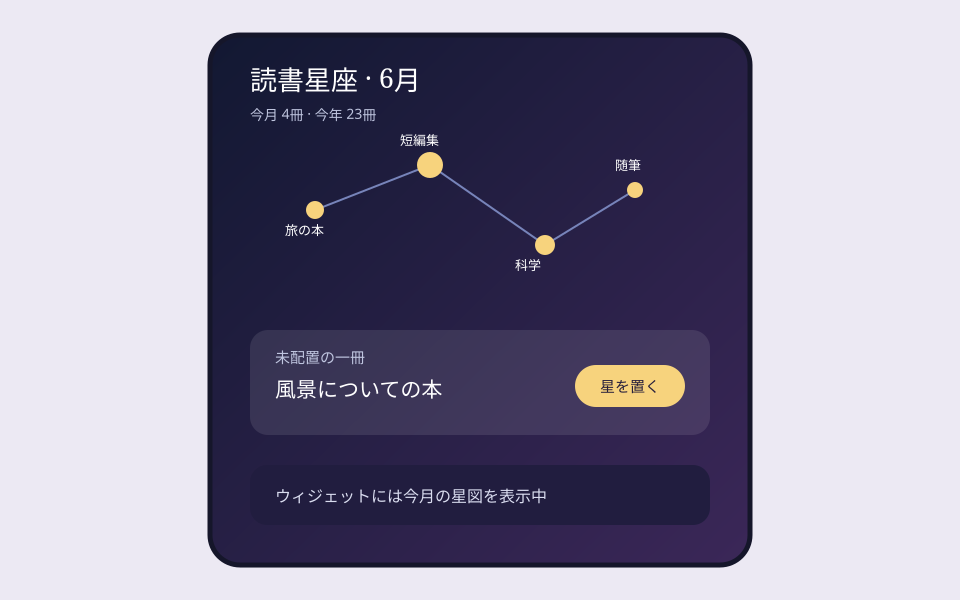
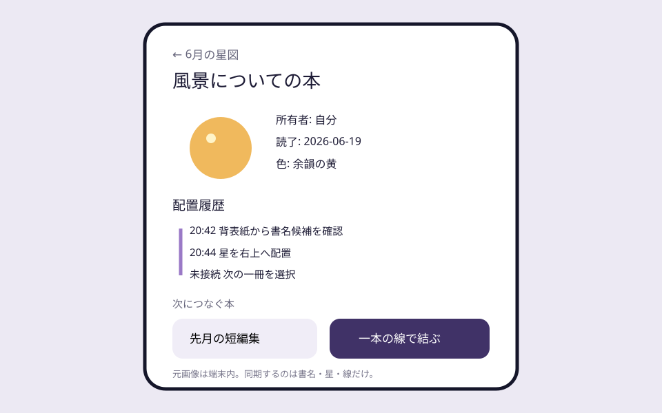

Question Note
読み終えた本が星図になる「読書星座」ウィジェット事業案


体験の全体像
「読書星座」は、読み終えた本の背表紙や表紙を端末内で読み取り、一冊を一つの星として私的な星図へ置くアプリです。冊数競争や長文レビューではなく、読書の時間が少しずつ夜空の形として残り、ホーム画面で眺められることを商品にします。
利用者・きっかけ・継続ループ
| 主対象 | 月1〜6冊を読み、記録アプリやSNS投稿は重いと感じる個人 |
|---|---|
| 状況トリガー | 一冊を読み終え、棚へ戻す直前 |
| 反復ループ | 背表紙を読む → 星を置く → 前の本と線を結ぶ → ウィジェットで眺める |
| 端末面 | iPhoneカメラ、ホーム・ロック画面ウィジェット、年別星図 |
| 内容差分 | 本の順序、色、線、読了間隔から本人固有の星図が育つ |
既存手段で足りない点
- 読書管理は冊数、目標、レビューが中心で、眺める記念物になりにくいです。
- 写真アプリでは本と読了順序の関係が見えません。
- SNSでは公開と反応が前提になり、読書の私的な余韻を保ちにくいです。
サービス構成と保持・支払い理由
- カメラの文字認識で書名候補を端末内抽出し、利用者が確定する。
- 読後の気分を5色から一つだけ選び、星として置く。
- 直前の一冊または任意の一冊へ線を一本結ぶ。
- WidgetKitで今月・今年の星図を静かに表示する。
広告なし、原画像を送らない標準設定、年別アニメーション、高解像度書き出し、独自の星図テーマが保持・支払い理由です。OCR結果は書誌情報の正確性を保証せず、本人の記憶の索引として使います。
100万円規模に抑えた市場設定
| 到達可能利用者 | 読書コミュニティと作品紹介経由で5,000人 | 大量広告を前提にしない |
|---|---|---|
| 年額プラン | 850人 × 960円 | 816,000円 |
| 星図テーマ | 680件 × 300円 | 204,000円 |
| 初年度売上 | 合計 | 1,020,000円 |
AWSシステム要件と支出
東京リージョン、1 USD = 150円、無料枠・クレジット除外、1,500 MAU、表紙画像は原則端末内、同期は書名・星・線・購入権利のみの概算です。実装前にAWS Pricing Calculatorで再計算します。
| AWSリソース | 用途 | 想定使用量 | 月額 | 年額 |
|---|---|---|---|---|
| Amazon S3 | 星図テーマ、紹介サイト、書き出し素材 | 12GB | 400円 | 4,800円 |
| Amazon CloudFront | テーマ素材の配信 | 月35GB | 1,000円 | 12,000円 |
| Amazon Cognito | 任意同期アカウント | 1,000 MAU | 600円 | 7,200円 |
| Amazon API Gateway | 星図・購入権利同期API | 月10万件 | 300円 | 3,600円 |
| AWS Lambda | 購入検証、年別星図生成 | 月12万実行 | 450円 | 5,400円 |
| Amazon DynamoDB | 利用者設定、所有者ID、書名、任意著者名、読了日、気分色、星座標、接続先、配置履歴、テーマ、購入権利、同期版、削除状態 | 3GB、月20万読書き | 900円 | 10,800円 |
| Amazon SES | 購入・同期復旧メール | 月1,000通 | 200円 | 2,400円 |
| Amazon CloudWatch | 同期・生成失敗の監視 | ログ2GB、6アラーム | 800円 | 9,600円 |
| AWS Backup | 星図と購入権利の日次復旧 | 8GB | 450円 | 5,400円 |
| AWS Budgets | 配信費の上限通知 | 2予算 | 150円 | 1,800円 |
| Amazon Route 53 | 紹介サイト・APIのDNS | 1ゾーン | 100円 | 1,200円 |
| AWS合計 | 小規模時の予算上限 | 5,350円 | 64,200円 | |
AIを使った開発見積もり
| 体験設計 | 星図ルールと文案の発散 | 1週 |
|---|---|---|
| 試作 | Vision文字認識、星配置、ウィジェット | 3週 |
| 本実装 | 同期、課金、書き出し、テスト補助 | 5週 |
| 検証 | OCR補正、アクセシビリティ、端末試験 | 3週 |
AIなしの約17週を約12週へ短縮します。星図の独自表現、著作物画像の扱い、プライバシー、課金表示は人が判断します。
売上・支出・利益
売上 - 支出 = 利益
| 売上 | 1,020,000円 | 年額816,000円 + テーマ204,000円 |
|---|---|---|
| 支出 | 357,200円 | AWS 64,200円、ストア手数料等153,000円、デザイン100,000円、端末・告知40,000円 |
| 利益 | 662,800円 | 事業主の制作・運営人件費と税引前 |
必要人数と人材要件
iOS開発・運営1名 + ビジュアルデザイン単発外注です。実行者がVision、WidgetKit、AWS同期、課金を担い、星図表現とアクセシビリティを外部レビューします。
リスクと最初の検証
- 文字認識の誤りを自動登録せず、候補確認を必須にする。
- 表紙画像を無断配信せず、標準は文字と抽象星だけを同期する。
- 冊数連続記録を競わせず、空白期間も星図の余白として扱う。
50人に8週間提供し、読了時登録率、週2回以上のウィジェット閲覧、年額960円の購入意思を測ります。